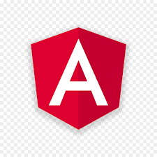

WEB DEVELOPMENT TECHNOLOGIES
Web development is the work involed in developing a website for the Internet (World Wide Web) or an
intranet (a private network). Web development can range from developinga simple single static page
of plain text to complex web-based internet applications (web apps), electronic businesses, and social
network services. There are three kinds of web developer specialization: font-end developer, back-end
developer and full-stack developer. Front-End developers are responsible for behavior and visuals that
run in the user brower, while back-end developers deal with the servers.[
Source: Wikipedia
]
We will study many different web technologies, including those described below.
HTML 5

HTML5 (HyperText Markup Language 5) is a markup language used for structuring and presenting content on the World Wide Web. It is the latest version of HTML as shown in the list below
- HTML 1.0
- HTML 2.0
- HTML 3.0
- HTML 3.2 (Wilbur)
- HTML 4.0 (Cougar)
- XHTML
- HTML 5


CSS
CSS (Cascading Style Sheets) CSS describes how HTML elements are to be displayed. CSS is
used to define styles for your web pages, including the design, layout and variations in display
for different devices and screen sizes
W3 Schools
Bootstrap is a popular CSS framework
Responsive Web Design (RWD)
Responsive Web Design is not so much a technology, as it is a technique. As W3 Schools very simply states: RWD is about using HTML and CSS to automatically resize, hide, shrink, or enlarge, a website, to make it look good on all devices (desktops, tablets and phones). A responsive web design will automatically adjust for different screen sizes and viewports. You will want your wevistes to always adhere to RWD principles, with few exceptions. RWD is the reason that the "viewport" meta tag is included in our HTML template.
JavaScript (JS)
JavaScript is the programming language of the browser. JavaScript is not Java. Java is a strongly typed language so variables must be declared prior to use in a program. In Java the type of a variable is checked at compile-time. JavaScript, on the other hand, is a weakly typed language with more relaxed syntax and rules. Java is an object-oriented programming language, whereas JavaScript is an object-based scripting language. A Java program has the file extension ".java" and translates source code into bytecode, which is executed by a JVM (Java Virtual Machine). A JavaScript fiel, on the other hand, has a file extension ".js" and it is interpreted but not compiled. Every browser has the JavaScript interpreter to execute JS code. JavaScript's name is the result of a co-marketing deal between Netscape and Sun, in exchange for Netscape bundling Sun's Java runtime with their then-dominant browser. JavaScript was originally called Mocha, then was renamed to LiveScript, and then was renamed to JavaScript.
Server-side Languages

Server-side code is simply code that runs on a server and produces web page content that is sent to a browser. One major advantage of Server-side code is its access to and ability to manipulate database (SQL Server, MySQL, Oracle, SQLite, etc.) information. Server-side code is often referred to as "back-end" code. Some popular server-side programming languages include:
- ASP.NET C#
- Core MVC
- PHP
- Java and Node.js
- Python
- Ruby
Front-End Frameworks

A front-end framework is essentially a bundle of JavaScript that someone else has coded, which you can
include in your application to help you build it faster. Front-End frameworks declare rules on how developers
should structure their HTML, CSS and JavaScript to make the application easier to develop.
The most popular front-end frameworks at this time are:
- Angular
- React
- Vue
- Svelte
Progressive Web Apps (PWAs)

A Progressive Web App (PWA) is a web app that uses modern web capabilities to deliver an app-like
experience. Many experts in the industry believe that PWAs are the future. Some, even saying, that PWAs
will replace mobile apps. PWAs have the following advantages:
Progressive Web Apps (PWA) are built and enhanced with modern APIs to deliver native-like capabilities,
reliability, and installability while reaching anyone, anywhere, on any device with a single codebase.
Progressive Web Apps are web applications that have been designed so they are capable, reliable, and installable.
[
More information...
]